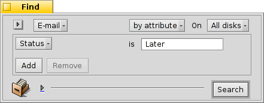

| 索引 |
|
Haiku 邮件系统 自定义状态 使用查询 更多帮助 |
操作练习：邮件管理
本次练习讲解主要针对 Haiku 下的邮件管理。并且我们假定 电子邮箱 首选项中已经对邮件服务作了正确的配置，并且您已经对 电子邮箱 应用的基本功能有了一定的了解。
 Haiku 邮件系统
Haiku 邮件系统
如果您在使用 Haiku 之前有过其他系统的经验，您可能会习惯于 MS Outlook 或者 Mozilla 的 Thunderbird 等大型邮件程序。您必须输入所有有关邮件服务器地址的信息进行配置，并且它们使用各自的联系人数据库。它们负责发送和获取邮件，并将邮件存入一些大的特殊文件。
邮件客户端的更换会非常的麻烦，您必须进行导入/导出等操作，还要进行系列的转换。同时使用多个邮件客户端检查邮件也是不可行的，可能会带来不必要的混乱。
Haiku 邮件系统稍有不同。它由一些较小的独立模块构成。
mail_daemon 负责与您的邮件服务器进行通信。电子邮件 首选项集中管理邮件账户的配置，例如邮件检查时间。
每个收到/发送的消息都将保存为单个的邮件文件，它们的邮件头信息（如发送者，主题，日期）和状态（如新邮件，已回复，已发送）保存为 BFS 属性。这样能够方便使用 Haiku 的快速查询进行搜索和过滤。

由于每个邮件都是独立的文件，进行查阅就非常简单，就像是在使用 图片查看器 浏览图像目录（或者查询结果）。在您使用上一个/下一个按钮浏览邮件时，在打开的文件浏览器窗口中，您可以看到当前浏览文件的切换选中。
因为他们都是独立的文件，无论是使用查看器还是 Haiku 的 电子邮箱 程序都没有任何差别。
与此相似，创建新邮件也就是相当于去创建一个由 mail_daemon 管理并负责发送的新文件。联系方式则由 联系人 应用进行管理。
总而言之，其他的邮件客户端会负责所有的事情；然而对于 Haiku ，从与邮件服务器交互，到查看您的所有邮件，以致于邮件搜索和过滤的工具，它则通过很多小工具和常用文件管理来完成：
mail_daemon 用于获取、发送邮件，并将其保存为常规文件。
文件浏览器窗口和查询用于查找和显示电子邮件文件。
电子邮箱 程序依赖于联系人 程序提供的系统内联系人管理功能，用于查看邮件文件和新建邮件。
使用 文件浏览器 和查询功能进行邮件管理确实很不错。您于此获得的经验可用于任何和文件处理有关的问题。例如图像，音乐，视频，联系人以及其他任何文档，都可以使用文件浏览器，因为它是所有文件管理的核心。
同时，在这些系统领域的提供不仅仅能够惠及电子邮件处理，还会有助于所有使用这些功能的应用程序。
自定义状态
在您检查自己的新邮件时，您可能希望之后在仔细的进行阅读。您可以使用电子邮件菜单的 ，让它们仍然保留在您的 “新邮件” 查询中，以这种方式让任务保留起来。
当然另一种方式是撰写回复并保存为草稿。但是如果您不希望编写回复，而只是留待以后再次阅读，这样就不大方便。

您最好使用 来创建一个新状态，为您的邮件分类。比如，您可以为其命名为"待阅"，在您空闲的时候再查询该状态的邮件，阅读即可。
或者，你可以为指定项目使用不同状态。例如，我创建了 "HUG"（表示 "Haiku user guide"，即 Haiku 用户指南）状态，然后在其下放置所有可能会影响用户指南内容的邮件，如有关代码更改提醒，新功能引入，或者任何我觉得能够增强用户指南的提交邮件。
但是，请务必保证状态名称的简洁。最好能够完整显示在文件浏览器的 “状态” 栏宽度内。
您不一定要使用 电子邮箱 程序打开邮件进行状态设置。您也可以选中某些邮件文件，然后使用文件浏览器的 标记为已读 或 标记为... 附加组件来一次性设置它们的状态。
使用查询
当然，您指定目录储存邮件，您打开这个目录，里面就是您所有的邮件。时间久了，这个目录难免会变得拥挤不堪，由于有上千个文件，并且它们属性需要解析和分类，其中全部内容的显示需要很长的时间。并且，通常您并不关心两年前有关尼日利亚和它们遗留问题的古老邮件...
查询，大救星！
使用查询，您可以浏览查看邮件。实际上，桌面栏上的电子邮箱图标就是用了查询。

就是对 “草稿” 状态的查询，也就是您在使用 电子邮箱 保存邮件时所设置的状态。
和 都是常规目录的链接（在我看来，并没有很大用处）。
子菜单由对状态为 "新邮件" 的邮件的一次查询实现。（当然，也使用了同样的查询来修改邮箱图标上的邮件数量）。
您可以在上述菜单中加入自己的查询（如目录、程序和脚本等）中，也就是把它们或者它们的链接放入目录 ~/config/settings/Mail/Menu Links 。
查询实例
下面是几个有用的查询实例：
|  查询具有自定义状态 "Later " 的所有邮件。 |
 查询过去两天的所有邮件。 |
 查询两周内 Ingo Weinhold 发送的所有邮件。 |
 查询 12 个月内 Haiku commit list 上的所有内容。 |
更多帮助
如果您没有将查询保存为 "Query" 而是 "Query template"，那么使用它并不会显示结果窗口，而是 查询... 窗口。 通过这种方式，你可以轻松地修改搜索邮件的主题和发送者的字符。比如将时间 "2 天" 限制在 "3 天"。
在 文件浏览器首选项 中激活 “实时过滤” 将允许您进一步的筛选查询结果。通常情况下，在使用实施过滤的情况下查询最近三天的邮件就已经足够了。 这种方式最大的优点在于，您不需要准确的指定所要搜索的属性，因为在过滤时已经将所有显示属性包括在内。